MaluyNuka
Dos pingüinos, un iglú.
Ninguno llega solo.

Cooperativo para 2
PC y celular
Desliza →
Dos pingüinos, un iglú.
Ninguno llega solo.
Súbanse uno encima del otro,
pisen botones, átense con una cuerda.
Solo ganan si llegan los dos.
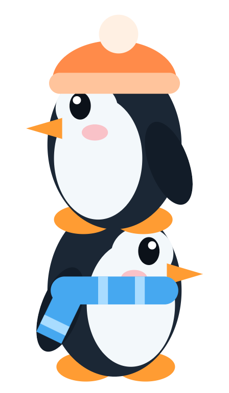
32 niveles, del pueblo a la avalancha
El pueblo · El glaciar · La montaña · La cueva de cristal
La tormenta · Bajo el hielo · La avalancha
7 parejas esperan en jaulas por el camino.
Libérenlas y jueguen con ellas.
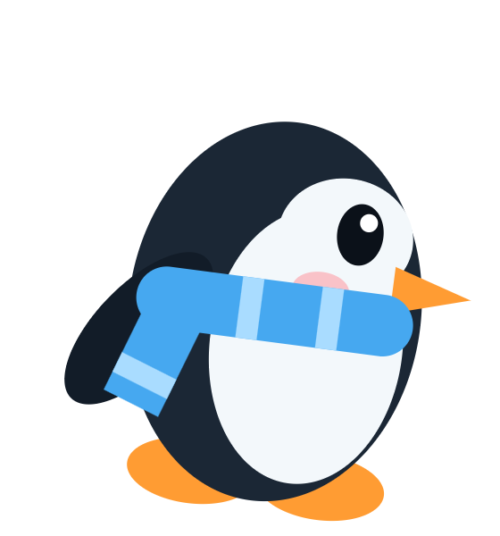
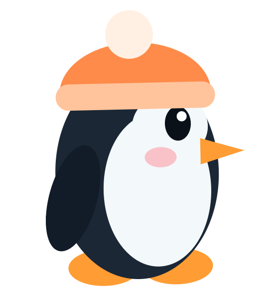
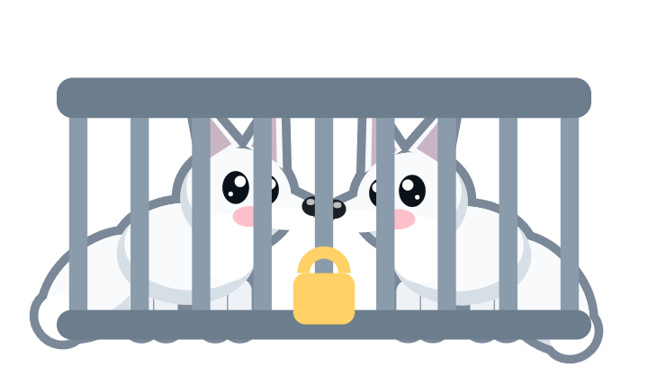
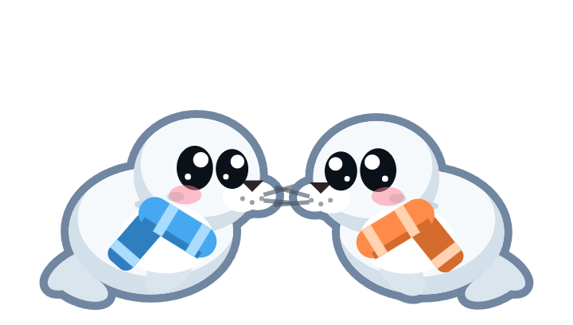
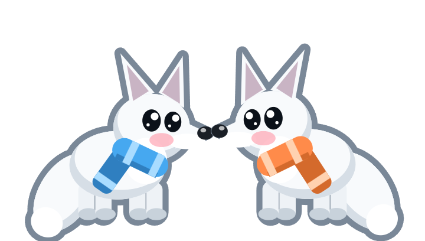
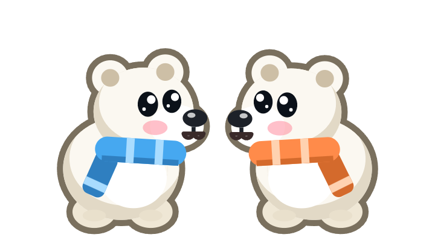
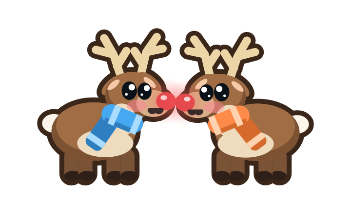
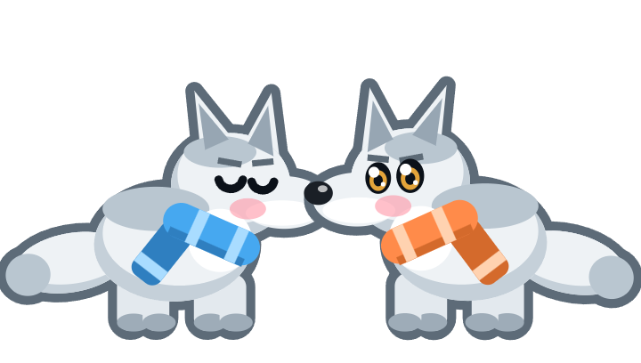
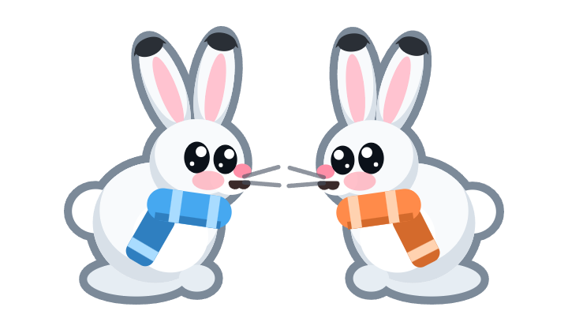
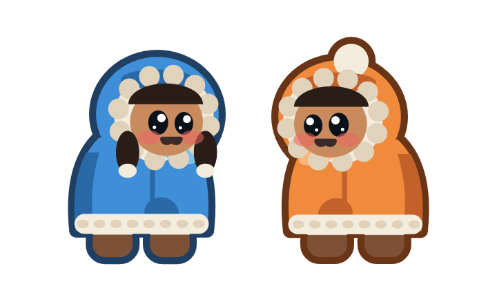